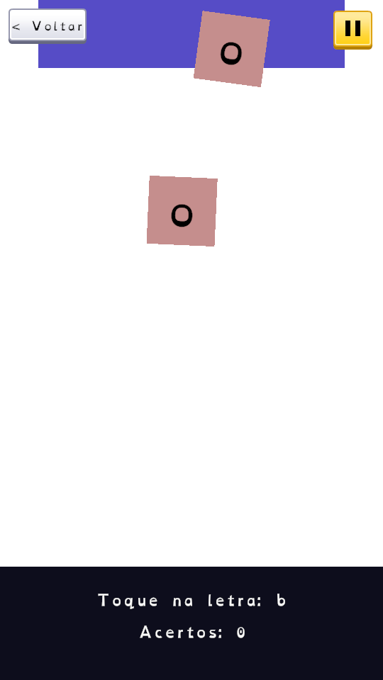
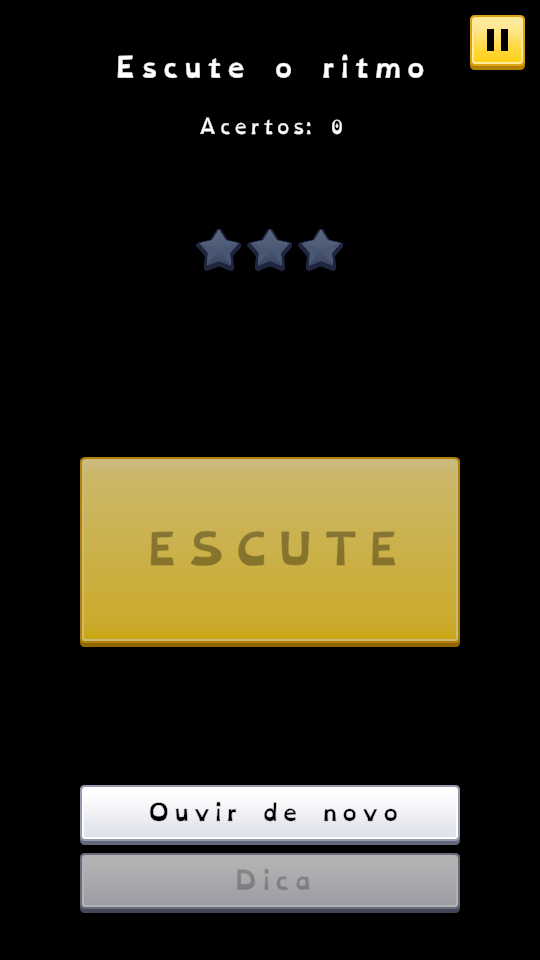
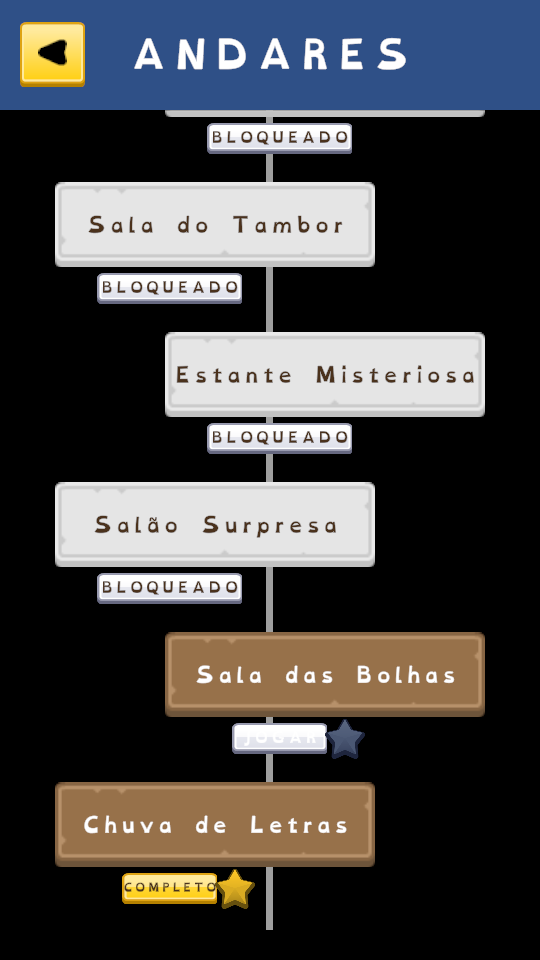

Quatro jogos curtos
Cada jogo treina uma habilidade ligada à leitura. A criança só vê o nome e como jogar. Termos técnicos e números ficam no relatório do adulto. As imagens são capturas reais do protótipo, ainda com arte provisória.
Acha a Letra!
Letras caem como chuva. Você toca na letra pedida. Os níveis começam com letras bem diferentes e chegam às que se confundem (b, d, p, q; n, u; m, w).
Treina: distinguir letras parecidas. O jogo descobre qual troca é a difícil para você e passa a repetir mais essa.

Esprema a Sílaba!
Bolhas com sílabas flutuam. Você toca nelas na ordem para formar a palavra (bo, la: bola).
Treina: separar a palavra em sílabas, uma base para ler e escrever.

Quem Sumiu?
Algumas letras aparecem e depois uma some. Você diz qual sumiu.
Hoje é um jogo de memória. A ideia é trocá-lo por um jogo de atenção visual a vários elementos ao mesmo tempo (o "Relâmpago da Estante"), que tem mais apoio na literatura.

Segue o Ritmo!
Você ouve e vê batidas e repete o padrão tocando.
Em aberto: não é certo que fique no MVP. A evidência de que ritmo ajuda na leitura é recente e modesta, e vem de jogos de formato diferente.

O mapa dos andares
Entre os grupos de jogos há salões que alternam os jogos anteriores em nível fixo, 3 rodadas de cada, sem dica e sem reforço. Você não vê nota. Servem para comparar o desempenho ao longo do tempo e não bloqueiam nada.
Quando um andar é concluído, o selo vira "completo" e uma estrela acende.

Quando a criança erra ou empaca
Se você errar
O jogo repete o mesmo item com a resposta certa em destaque. É uma ajuda, não um castigo.
Se você empacar
Aparece um botão de dica. Respostas dadas com ajuda não contam como domínio, mas também não punem.